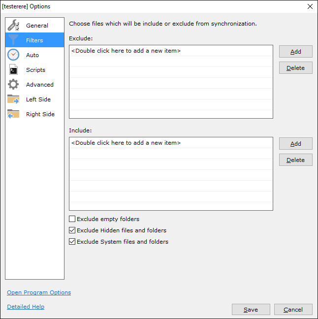

用了三年GoodSync才摸到这五个暗门，藏得真深
你以为GoodSync就是个文件夹双向同步工具？其实它还藏着Smart Backup、版本历史、Forwarder强制模式等连老用户都没摸过的隐藏功能，翻到底层把它们挖出来。
你以为 GoodSync 就是个把文件夹从 A 戳到 B 的双向同步工具？我之前也是这么想的——安装包从下载拿，装上去建个作业选好两端点，点一下 Analyze 然后 Sync，完事。直到上个月跟 NAT 穿透死磕了三天，被逼着翻遍了所有 Advanced 设置和日志文件才去官网翻了一圈，才发现这货肚子里藏着好几个连老用户都没摸过的暗门。
今天把五个压箱底的隐藏功能挨个掏出来，每个都讲清楚在哪、怎么开、什么场景真有用。
暗门一：Smart Backup——Backup 和 Sync 中间那条缝
大多数人在 Job Type 下拉框里只会选两个选项：Backup（单向备份）或者 Synchronize（双向同步）。但你仔细数一下下拉框的条目——是不是多了一个？有的版本叫 Smart Backup，有的叫 Uni-directional Sync，翻译过来就是单向同步。
这个模式跟普通 Backup 看起来像一回事，实际行为差得远：
普通 Backup 是「左是主、右是镜像」——左边删了的文件右边跟着删，左边改了的右边覆盖，右边的任何操作都传回不来。Smart Backup 则只同步新增和修改，左边删了的文件不会从右边抹掉。
什么时候用得上？比如我有一台主办公机，要把最新的代码仓库推到三台测试节点。测试节点上经常会临时生成调试日志、覆盖率报告、临时构建产物——这些文件不该存在主仓库里，也不该每次同步被删掉。用普通 Backup 的话，主端清理后测试节点的临时文件也跟着消失；用 Synchronize 又会把测试节点的临时文件反传回来搞脏主仓库。Smart Backup 正好卡在中间：主端的改动能推下去，测试端的额外文件能留住，互不干扰。
在哪开的？打开作业 → Options → General → Job Type 下拉框。别再只盯着前两个选项了。
暗门二：版本历史——被删的文件还能捞回来
用 Backup 模式的人都有过类似的心理阴影：某天脑子抽了在左侧源目录批量删了一堆旧文件，启动同步后右侧镜像也跟着消失了，悔得拍大腿。官方文档里提过一句「建议配合版本历史功能使用」，但没说怎么开，默认也是关闭的。后来翻了文档才确认这功能真的存在。
开启后，Backup 模式下左侧删除或覆盖的文件不会直接从右侧抹掉——它们会被转移到一个版本历史目录里，文件名带上时间戳。你想要恢复的话，在版本历史里找到那个文件，右键选 Restore 就回来了。
开启路径：作业 → Options → 找版本历史相关的选项（不同版本位置略有差异，有的在 Advanced 子标签里）。开启后你可以设置保留多少个版本、保留多久。对做异地备份的朋友来说，这功能相当于给备份套了一层垃圾桶——误删不再是灾难。
暗门三：Forwarder Only——NAT 穿透失败时的杀招
GoodSync Connect 的连接机制默认是「直连优先、Forwarder 兜底」。直连靠的是 P2P hole punching，在对称 NAT 或者企业防火墙后面经常穿不过。大部分人遇到连接失败会去重启、换账户、检查防火墙——但很少有人知道 Connect 设置的 Advanced 里藏着一个「Forwarder Only」开关。
勾上它之后，GoodSync 直接跳过直连尝试，强制走 Forwarder 中转。日志里不会再出现一连串的 "Direct connection failed"，而是一条干净的 "Using Forwarder"。Forwarder 不是降级方案，它是正常设计——官方文档明确说这是备选用途，只是默认不启用。
我的场景是办公电脑在公司路由器后面（对称 NAT），家里 NAS 挂在光猫下，直连从来没成功过。之前每次同步都要等直连超时（大概 30 秒）才会走 Forwarder，现在直接勾了 Forwarder Only，连接时间从 30 秒缩到 3 秒。
在哪找：GoodSync → Tools → GoodSync Connect Setup → Advanced → 勾选 Forwarder Only。
暗门四：GSTP 应用层二次加密——给 TLS 再套一层 AES-256
GoodSync 用 GSTP 协议（也就是 GoodSync Connect 默认的传输协议）的时候，底层已经有 TLS + AES-256 加密了，正常来说链路安全已经够了。但如果你在 Options 的安全相关设置里深挖，会发现有一个额外加密的开关——开启后在 TLS 之上再套一层应用层的 AES-256 加密，等于双重加密。
密钥怎么来？由你首次启用时设置的密码通过 PBKDF2 算法派生，GoodSync 本身不保存这个密码——两端必须设同一个密码才能同步。官方文档里只提了一句，很多人没注意到 GSTP 也能开这层，因为它对 FTP 和 HTTP 版 WebDAV 才是强制推荐的，而 GSTP 已经有 TLS 了，所以默认不提示。
实际开销几乎可以忽略——现代 CPU 有 AES 指令集，加解密吞吐数百 MB/s，加密开销小于 5%。我自己在 NAS 上测过，开了双层加密后同步 10GB 文件，时间差不到 10 秒。低性能 ARM 设备（比如老款 Raspberry Pi）可能会有感觉，但对正常电脑和主流 NAS 来说没影响。
提醒一个坑：这个密码丢了就彻底找不回来。不像网盘能找回密码，GoodSync 不存你的加密密码，只存加密后的密钥文件。设置完密码一定要记好，或者写进密码管理器。
暗门五：过滤器面板——按扩展名、路径、大小、日期精细筛选
打开作业的 Options，翻到 Filters 标签——这里藏着一整套精细的文件筛选规则。大多数人建作业的时候就是选好左侧目录和右侧目录，直接 Analyze 然后 Sync，但过滤器可以让同步变得极其精准。
比如我在给 NAS 做照片备份的时候，不想把 iPhone 照片流里那些 .aae 编辑文件（其实是个 XML）和 .mov 实况视频的附加文件也同步过去。过滤器里加一条排除 *.aae 和 *.mov 的规则就搞定了，不用去照片目录里手动删。
过滤器支持按扩展名、路径模式（通配符）、文件大小、修改日期范围来筛选，还支持包含和排除两种方向。更进阶的是可以用正则表达式——比如只同步目录结构里包含 2024 的子目录，或者只同步大小超过 1MB 的文档。

一个提醒：别让 Smart Backup 和普通 Backup 搞混
Smart Backup 虽然好用，但它和普通 Backup 切换的时候要格外小心。切换模式不会清空端点和过滤器配置，但操作逻辑会变。我之前有个作业从 Backup 改成了 Smart Backup 之后忘了这件事，结果右侧镜像里积累了好几个 GB 的临时构建产物没被清理——直到下次检查备份一致性才发现。
如果你的场景确实需要 Smart Backup，建议在作业名称里加个标注，比如 OfficeToTestNodes_SmartBackup，免得日后自己忘了。
GoodSync 的官方文档写得太简略，很多功能只提一句存在但不告诉你怎么找。翻完所有设置、摸完所有 Advanced 面板之后才发现，它藏起来的不是冷门功能，而是那些能让日常使用效率翻倍的进阶设置。把它用透的关键不是学操作流程，而是把每个下拉框、每个 Advanced 标签都点开看看——暗门就在那里。另外整理 GoodSync 相关资料的时候顺手也塞了一份到三个仓库：GitHub 是主仓，国内访问慢的话去 Gitee 或 GitCode 也能拿到同样的东西。